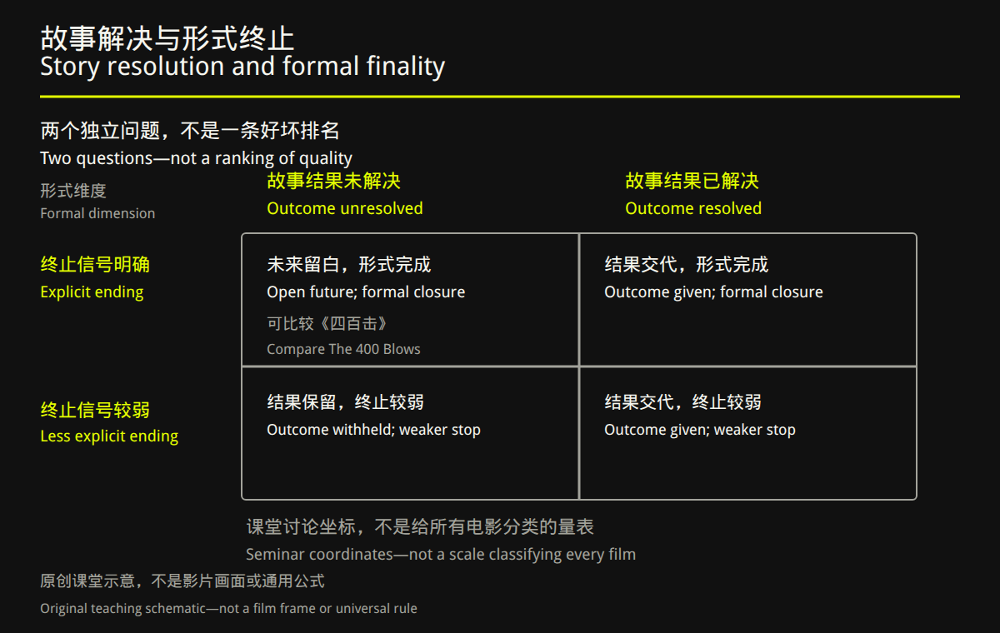
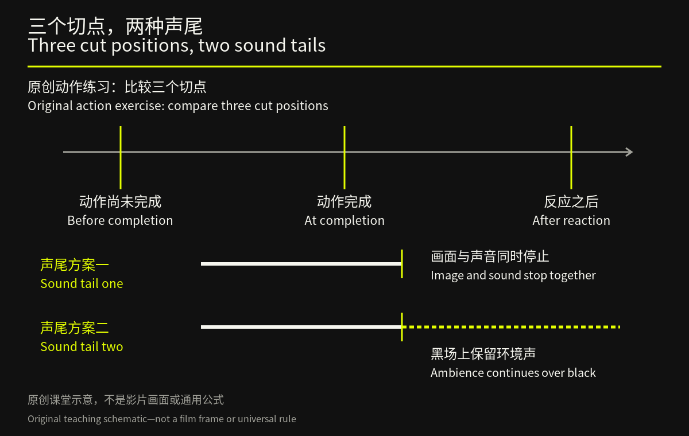

An ending contains at least three decisions: where events stop, what viewers see last and how the film releases us. Resolution, final image and epilogue may coincide or remain distinct. A twist does not automatically improve an ending, and withholding explanation does not automatically create depth.
全页剧透提示：往下会讨论《惊魂记》两版、《四百击》《一次别离》《1917》《消失的爱人》《搜索者》《晚春》《一一》《花样年华》《杀人回忆》等结尾。每个影片案例都可以单独折叠。具体结局写在折叠面板里；未看过可以只做练习。教程预览若可能露出结局，警告写在图片之前。Spoilers throughout: the page discusses endings of both Psycho films, The 400 Blows, A Separation, 1917, Gone Girl, The Searchers, Late Spring, Yi Yi, In the Mood for Love and Memories of Murder. Each film case folds on its own. Specific outcomes sit inside those panels. If you have not seen a film, you can still do the exercise. Where a tutorial preview may reveal an ending, the warning comes before the image.
学完你将能By the end you can
区分故事结果、形式终止、情感收束与主题回响。Distinguish story outcome, formal termination, emotional closure and thematic resonance.
设计开放性，而不是仅仅遗漏必要信息。Design openness instead of accidentally omitting necessary information.
用回返、声音、画外空间和切点改变最终判断。Change the final judgement through recurrence, sound, offscreen space and cut timing.
检查谁获得最后的发言权，谁被结尾的快感遮蔽。Examine who receives the final say, and whose experience an ending’s pleasure obscures.
Observations below draw on cited transcript text, criticism and interviews. A thumbnail or video description is not treated as a shot-by-shot screening. Establish image or sound facts before arguing meaning. One critic’s response does not establish every audience’s response. Sentences marked “Seminar interpretation” are this workshop’s arguments, not a director’s uniquely confirmed intention.
01
故事结束了，电影结束了吗？Resolution, last image, epilogue
目标Objective
把“问题已经解决”和“最后影像产生了什么”分开检验。
Test the solved problem separately from the work of the final image.
剧透提示：下面的教程比较两版《惊魂记》的最后影像，也讨论《搜索者》《教父》《消失的爱人》等结尾。先读这段，再看预览图。预览是创作者缩略图，不是本课截取的画格。Spoiler notice: the tutorial below compares the final images of both Psycho films and discusses endings including The Searchers, The Godfather and Gone Girl. Read this before the preview. The preview is the creator’s thumbnail, not a frame captured for this course.
本页只加载一次这个播放器。后面的章节回到这张卡片。嵌入失败时使用原站链接。课文不依赖播放。This page loads this player once. Later chapters return to this card. If the embed fails, use the external link. The lesson does not depend on playback.
Final image, thresholds and recurrence. Treat the value judgements as arguments you can test. A wide ending, a closed door or a repeated shot is not automatically good or bad.
剧透Spoilers展开两版《惊魂记》的最后影像。未看过 1960 或 1998 年版请跳过。Open the comparison of both Psycho endings. Skip it if you have not seen the 1960 or 1998 film.
字幕文本分析Transcript-based analysis
Now You See It 的《How to End a Movie》纠正一个常见记忆：《惊魂记》Psycho（1960，Alfred Hitchcock）不是停在 Norman 的面孔，而是继续到汽车被从沼泽拖出的影像。字幕指出汽车朝向摄影机，并以此解释不适感。对照《惊魂记》（1998，Gus Van Sant），视频把结尾的景观后退理解为重新回到日常世界。这是 Now You See It 的批评判断，不是“宽景必然失败”的规则。两部片是两个作品，不要合成一条片目。
Now You See It’s How to End a Movie corrects a common recollection: Psycho (1960, Alfred Hitchcock) does not stop on Norman’s face. It continues to a car being pulled from the swamp. The transcript identifies the car’s movement toward the camera and argues that this sustains discomfort. It contrasts Psycho (1998, Gus Van Sant), reading the landscape’s withdrawal as a return to ordinary life. That is Now You See It’s critical judgement, not a rule that wider views necessarily fail. The two films are separate works. Do not collapse them into one record.

故事解决与形式终止。图内中英文标出两个独立问题。《四百击》被写成一个比较对象，不是测量数据。概念来自 Raskin 对 Neupert 的讨论，见下方阅读。Story resolution and formal finality. Chinese and English labels on the graphic keep the two questions separate. The 400 Blows is named as a comparison, not as measured data. The distinction follows Raskin’s discussion of Neupert, linked below.
An emotional turn may remain after the plot’s answer. Mark four nodes: causal resolution, character response, final image and the beginning of the credits. Do not automatically call every final scene an epilogue. An epilogue adds a distinct unit after the main narrative. Chapter 7 discusses epilogue forms. That player is not loaded here.
剧透Spoilers展开《四百击》的结尾：海岸、回望与定格。未看过请跳过。Open the ending of The 400 Blows: coast, look and freeze-frame. Skip it if you have not seen the film.
文章依据Article-based
《四百击》The 400 Blows（1959，François Truffaut；法文常作 Les Quatre Cents Coups / Les 400 Coups）终止在海边回望的定格，Antoine 的未来却没有解决。Richard Raskin 借 Richard Neupert 的研究区分“故事解决”与“叙述话语的闭合”：结尾可以在形式上明确，在故事上开放。地点与动作的核对见 Adam Scovell 的 BFI 文章。不要把那篇文章的当代海滩照片当成定格画格。
The 400 Blows (1959, François Truffaut; often Les Quatre Cents Coups or Les 400 Coups) ends on a freeze-frame looking back from the coast, while Antoine’s future stays unresolved. Drawing on Richard Neupert, Richard Raskin distinguishes story resolution from closure of narrative discourse: formal finality can coexist with an open story. Adam Scovell’s BFI article corroborates the location and the action. Do not relabel that article’s present-day beach photographs as the freeze-frame.
故事可以开放，形式可以完成。Raskin 把 Bordwell 与 Thompson 的用法，和 Neupert 对“故事解决／话语闭合”的区分对照起来。不要写成“Bordwell 说一切开放结尾都没有闭合”。文中记录了对 Antoine 表情的多种解读，并没有宣布任意解读都成立。Truffaut 的轶事由 Samuels 转述，本课不把它当作一手引语。存档页的总题是 How Films End；上面的题目才是这篇文章。
An open story can have formal closure. Raskin sets Bordwell and Thompson’s usage beside Neupert’s separation of story resolution from discourse closure. Do not rewrite that as “Bordwell says every open ending lacks closure.” The essay records divergent readings of Antoine’s face without making every reading equally defensible. The Truffaut anecdote is second-hand via Samuels and is not used here as a primary quotation. The archive section is titled How Films End; the title above is the essay itself.
Coast, look and freeze-frame. The article pairs film images with photographs of the locations today. Those are different works. This course does not reproduce them, and it does not call the hero image the final frame.
Film a 20-second ending in which someone recovers a lost object. Stop one version at retrieval, one after the response and one on an object left behind. Keep the preceding story identical. Ask separately what happened and what viewers are still thinking about.
讲评Critique
三个版本是否真的改变最后判断，而不是只改变长度？能否指出最后影像提供的新工作？
Do the versions change the final judgement, not merely the length? What additional work does the final image perform?
02
开放，不等于含混Open futures and ambiguous evidence
目标Objective
区分“未来尚未发生”与“眼前事件存在多种解释”。
Distinguish an undetermined future from competing interpretations of an event already presented.
观察Observation
导演访谈Filmmaker interview
剧透Spoilers展开《一次别离》的结尾：女儿尚未说出跟谁生活。未看过请跳过。Open the ending of A Separation: the daughter has not yet said which parent she will live with. Skip it if you have not seen the film.
In Calum Marsh’s interview, Asghar Farhadi explains why A Separation (2011) stops while the daughter is deciding which parent to live with. He wants viewers to continue imagining, and he explicitly distinguishes that aim from confusing them. The interview cannot be reduced to a director refusing every answer.
Withholding an answer is not withholding every clue. This is one director’s account of his own practice. It does not prove that every audience prefers it. The page image is an interview portrait, not a film-ending still, and it is not reproduced here. The interview also discusses The Past.
Use this practical seminar distinction. An open ending withholds a future outcome. An ambiguous ending permits competing, evidence-based interpretations of what has already been presented. One ending may do both. Critical terminology varies. Identify the withheld question rather than racing to assign a label. The diagram in chapter 1 separates “is the outcome resolved?” from “is the stop explicit?”. Do not grade on a hierarchy of closed/commercial versus open/sophisticated.
剧透提示：下一条教程把 cliffhanger、含混、反转、圆形结构等放在一起，涉及《怪形》《盗梦空间》《禁闭岛》《原钻》等结局，以及死亡与暴力。先读提示，再看预览。Spoiler notice: the next tutorial groups cliffhangers, ambiguity, twists and circular structures, including endings of The Thing, Inception, Shutter Island and Uncut Gems, plus death and violence. Read this before the preview.
Ending options, not a formula. Compare the creator’s categories with this course’s operational distinction. Categories overlap, and some boundaries are contestable.
与其背诵分类，不如比较《一次别离》与《四百击》：前者让一个具体选择继续，后者连脸部表情的含义也引出分歧。Raskin 罗列了不同评论者对 Antoine 的希望、迷惘与受困等解读。回到 Raskin 的文章。《四百击》的折叠案例仍可跳过。
Rather than memorise categories, compare A Separation and The 400 Blows. One carries a specific choice forward. The other also invites disagreement about a facial expression. Raskin documents readings of hope, uncertainty and entrapment. Return to Raskin’s essay. The folded 400 Blows case can still be skipped.
Write two endings: one where a choice remains unmade, and another where an action occurs but supports two motives. List three visible clues for each. Collect audience readings before revealing intent. If an interpretation depends entirely on the director’s explanation, the film has not yet supplied enough evidence.
讲评Critique
观众能准确说出不知道的是什么吗？至少两种解读是否各有证据？是否只是删掉了让故事变得可理解的那场戏？
Can viewers name exactly what remains unknown? Do at least two interpretations have evidence? Have you merely deleted the scene that would make the story intelligible?
03
回到同一处，但不再是同一个人Callbacks need changed context
目标Objective
让回返揭示变化、停滞或代价，而不是仅仅完成对称。
Make recurrence reveal change, stasis or cost rather than symmetry alone.
Make four columns: returning element, invariant feature, changed feature and new audience knowledge. The first three describe form. The fourth makes the comparison narrative. Not every film needs to return to a location. A door, a gesture or a sound can recur instead.
回返的形状，变化的意义。先用这张虚构门口练习看懂四列表，再决定要不要打开下面的影片案例。Returning form, changing meaning. Use this invented doorway to understand the four columns before deciding whether to open the film cases below.
剧透Spoilers《1917》：开头两名士兵休息，结尾 William 独自休息。未看过请跳过。1917: two soldiers rest at the start; William rests alone at the end. Skip it if you have not seen the film.
字幕文本分析Transcript-based analysis
《1917》（2019，Sam Mendes）。StudioBinder《Art of the Opening Scene Pt. 2》的字幕用相近的休息情境让缺席变得可感。这是关系比较，不是声称全片是一次未经剪辑的拍摄，也不是精确帧匹配。来源没有提供可下载的首尾画格对，本课也不制造一对。
1917 (2019, Sam Mendes). The transcript of StudioBinder’s Art of the Opening Scene Pt. 2 uses a related resting situation to make absence perceptible. This is a relational comparison, not a claim that the feature is one unedited take, and not exact frame matching. The source does not supply a downloadable first/last frame pair, and this course does not invent one.
Test: name the recurring form, the changed relationship and the intervening experiences that make the change legible. “It bookends” is not yet an analysis.
剧透Spoilers《搜索者》：门口的进入与离开。未看过请跳过。The Searchers: arrival and departure at a doorway. Skip it if you have not seen the film.
字幕文本分析Transcript-based analysis
《搜索者》The Searchers（1956，John Ford）。Now You See It 的字幕描述开场从门口到来，结尾从相应门口离开。播放器在第 1 章。
The Searchers (1956, John Ford). Now You See It’s transcript describes arrival through a doorway and departure through the corresponding doorway. The player is in chapter 1.
比较任务：不要使用“孤独英雄”这四个字。改用可见的在场、离开与空间分配来解释结尾。
Test: do not use the phrase “lonely hero.” Explain the ending through visible presence, departure and spatial allocation.
暴力提示 · 剧透Violence · spoilers《杀人回忆》涉及谋杀、性暴力与警察滥用职权。展开前没有自动播放，也没有案件现场图片。Memories of Murder involves murder, sexual violence and police abuse. Nothing autoplays, and no crime-scene image is shown before you open this.
文章依据Article-based
《杀人回忆》Memories of Murder（2003，奉俊昊 Bong Joon Ho）。Tony Rayns 在 BFI / Sight and Sound 的文章中指出，影片以孩子的形象开始和结束；警察的偏见、暴力及对证据的误读，使影片不存在能解决案件的权威视点。Bong 的采访把创作关注从“凶手是谁”扩展到产生案件的时代。这些是 2003 年影片与 2004 年采访（2020 年重新上线）的论述，不等于断言现实案件永远未破，也不把网上关于最后凝视的所有说法都归给此文。比较的对象可以是观看者的位置，而不必是相同机位。
Memories of Murder (2003, Bong Joon Ho). Tony Rayns’s BFI / Sight and Sound piece notes children near the beginning and the end, and argues that police prejudice, violence and misreading of evidence deny an authoritative viewpoint that could resolve the case. Bong’s interview extends the creative focus from the killer’s identity to the period that produced the crimes. These statements concern the 2003 film and a 2004 interview republished online in 2020. They are not a claim that the real case remained unsolved forever, and they do not substantiate every online account of the final gaze. The pairing may concern the position of witnesses rather than matching camera positions.
Test: from a lawful screening, log three instances of seeing but misreading, then explain why solving a case need not supply ethical closure. No unverified shot list is supplied here.
剧透提示：若要在本页看 StudioBinder 第二集，预览可能露出《消失的爱人》《1917》等首尾。Perfect Opening 第 5 章也有同一支教程。本页只放一个播放器。Spoiler notice: if you watch StudioBinder Part 2 on this page, the preview may reveal bookends from Gone Girl, 1917 and others. Perfect Opening chapter 5 carries the same tutorial. This page loads one player.
Narrative time and bookends. The transcript includes the resting comparison in 1917, and how new relational knowledge changes related images of Amy in Gone Girl.
Film the same table twice from a fixed camera. Two people prepare to eat at the beginning. At the end, add no dialogue. Change only an object’s position, a person’s presence or one environmental sound. Ask viewers what stayed, what changed and what it cost.
讲评Critique
回返是否依赖中间事件才有意义？没有看中段的人与看过的人，判断是否不同？
Does the return depend on intervening events? Do viewers who saw the middle read it differently from those who did not?
04
情感收束不需要交代所有未来Closure can reside in a gesture
目标Objective
在不替角色解决一生的前提下，完成一段情感经验。
Complete an emotional experience without solving the rest of a character’s life.
剧透Spoilers《晚春》的结尾重量放在削苹果上。未看过请跳过。本课不提供小津的画格。Late Spring places the force of its ending in peeling an apple. Skip it if you have not seen the film. This course supplies no Ozu frame.
Late Spring (1949, Yasujiro Ozu). Michael Atkinson’s Criterion essay relates the simple act of peeling an apple to the film’s restrained spaces, still-life cutaways and the father–daughter relationship. This course does not supply an unverified shot count, the instant the peel breaks or a music cue.
The gesture works not because apples inherently symbolise separation, but because a changed relationship alters an ordinary action. An actor need not play abstract sadness. They can complete a task, hesitate or lose the impulse to continue it.
剧透Spoilers《一一》：Yang-Yang 在结尾获得说话的位置。未看过请跳过。本课不引完整台词，也不提供杨德昌的画格。Yi Yi: Yang-Yang is given a place to speak at the end. Skip it if you have not seen the film. This course does not quote the full speech or supply a Yang frame.
文章依据Article-based
《一一》Yi Yi（2000，杨德昌 Edward Yang）。Kent Jones 讨论 Yang-Yang 拍摄别人看不到的后脑勺，以及他最后找到声音；同一文章说明婚礼、葬礼等仪式如何把时间分给不同人物。
Yi Yi (2000, Edward Yang). Kent Jones discusses Yang-Yang’s photographs of the backs of people’s heads and his eventual finding of a voice, alongside the film’s rituals and the way time is given to different characters.
A gesture carrying separation. The picture stays on the article. Then read Bordwell’s caution below before turning Ozu into a generic Eastern or Zen label.
Ozu is not a generic Eastern label. Bordwell writes that more exposure to contemporaries reveals Ozu’s idiosyncrasy rather than a generic Japanese artistic culture. The essay is not proof of a last-shot or soundtrack list for Late Spring. The site banner is not a film still, and this course does not use it as a case image.
Film someone waiting for another person, then learning they will not return. Do not show the message. Give the performer one task: fold two towels. Make one version that allows one sentence and another without dialogue. Compare relational precision rather than which seems more artistic. Draw your own object-and-action board. Do not supply an imagined Ozu or Yang frame.
讲评Critique
动作是否与人物生活有关？情感是否来自关系，还是靠音乐强行指定？剩下的问题是否仍有明确对象？
Does the task belong to this life? Does feeling arise from a relationship, or from imposed music? Do the remaining questions still have specific objects?
05
切在什么时候，留下什么声音The last cut is an argument
目标Objective
把切点和声音尾部当成叙事决定，而不是导出文件前的技术收尾。
Treat the last cut and the sound tail as narrative decisions, not export housekeeping.

三个切点，两种声尾。图上的六种组合是实验变量。声条是示意图，不是从影片里提取的音频，也不是大师时间码。Three cut positions, two sound tails. The six combinations on the graphic are experimental variables. The sound marks are schematic, not extracted film audio and not master-film timecodes.
Cutting before a reaction can delegate inference to the audience. Retaining the reaction can locate judgement in a character. Longer is not inherently deeper. Sound continuing over black can sustain a space or a state of mind. Withdrawing sound may break that relation. Name the relation you want to preserve before deciding duration.
《How to End a Movie》把两版《惊魂记》的差异放在最后让观众面对的东西上，而不只是结局信息是否一致。细节在第 1 章的折叠案例里。回到那张卡片。《四百击》的定格则表明动作可以停止，未来问题仍然存在；Raskin 讨论形式收束时也把音乐纳入分析。文章在第 1 章。
How to End a Movie locates the difference between the two Psycho films in what viewers are left facing, not merely whether the plot information matches. The detail is in chapter 1’s folded case. Return to that card. The freeze-frame in The 400 Blows shows that action can stop while the future stays open. Raskin’s account of its formal closure includes the score. The essay is in chapter 1.
内容提示：下面的声音教程包含暴力和若干影片的重要情节。它不是结尾手册，不能证明一部它没有分析的影片最后用了什么声音。Content note: the sound essay below includes violence and significant plot moments. It is not an endings manual, and it does not establish the final soundtrack of a film it does not analyse.
Sound subtraction and character choice. Read its character-based approach to sound beside Raskin’s question of formal closure: what quiet, score or an abrupt stop actually does. Mute sound is not a prestige label.
Export six endings from your own material: three cut positions — before completion, at completion and after the reaction — each with sound stopping at the same time or ambience continuing. These are experimental variables, not master-film timecodes. Play them in random order. Ask what viewers remember last and when the film felt over. Record the answers rather than predetermining the best version.
讲评Critique
你能把情绪差别指向具体的声轨或切点吗？延长是否带来新经验，还是重复已经读懂的表情？
Can you trace a difference to a particular track or cut? Does a longer hold add experience, or repeat an expression that was already legible?
06
谁拥有最后的视点？Ethical viewpoint: who gets the last word?
目标Objective
检查结尾如何分配理解、责任与被观看的权利。
Examine how an ending distributes understanding, responsibility and the right to be seen.
Who becomes understandable last? Whose suffering becomes material for someone else’s growth? If the ending rewards only the protagonist, whose costs disappear? These are questions of framing, editing and narrative authority, not of appending a moral slogan.
暴力与性暴力的案例放在第 3 章的折叠面板里，不会自动播放。下面只给出文章卡片和比较问题。The case involving violence and sexual violence stays in chapter 3’s folded panel and does not autoplay. Below are the article card and the comparison questions only.
Beyond the case: who can claim an authoritative viewpoint. The article image stays on the publisher’s page and is not labelled here as the opening or final frame. The comparison itself is in chapter 3’s folded case.
Compare Farhadi on A Separation: the daughter’s choice is not simply a supplementary answer to her parents’ dispute. It becomes the beginning of another life. Folded case and interview. Return to the doorway in The Searchers and ask who remains outside, without declaring one symbolic reading the director’s only confirmed intention. Doorway case.
After your short’s ending, add one silent shot of the character who previously had the least voice. Do not assume it belongs. Compare how responsibility, sympathy and information change. If the shot only turns that person into another emotional instrument, remake it around an action of their own.
讲评Critique
是否能指出被排除的经验？改变视点是否改变了伦理判断，而不只是提供一张悲伤的脸？
Can you name an excluded experience? Does the changed viewpoint alter the ethical judgement, rather than merely adding a sad face?
07
尾声：补充、转向，还是解释过度？Epilogue as a deliberate second movement
目标Objective
证明尾声增加了什么，也能有理由地删掉它。
Demonstrate what an epilogue adds, and be able to justify removing it.
剧透提示：尾声教程涉及《银翼杀手》《美国风情画》《辛德勒的名单》《副总统》《玩具总动员 3》和《机器人总动员》等结尾。先读提示，再看预览。本课不从缩略图制造吴哥窟的高清结尾画格。Spoiler notice: the epilogue tutorial includes endings of Blade Runner, American Graffiti, Schindler’s List, Vice, Toy Story 3 and WALL·E. Read this before the preview. This course does not manufacture a high-resolution Angkor closing frame from a thumbnail.
Epilogue forms and functions. The transcript separates text, voiceover, montage and a later scene, and discusses closure, irony and sequel setup. Do not merge form and dramatic function into one compulsory chart, and do not treat every credit sting as necessary closure. Do not promote an unchecked etymology or a personal opinion into consensus.
An epilogue should change the scale of time, the distance of observation or the question. It should not merely repeat an outcome viewers already grasped. If removing it loses only the reassurance that the audience understood, inspect the preceding scene before adding more explanation.
剧透Spoilers《花样年华》转到吴哥窟，并插入 1966 年戴高乐来访的新闻影像。未看过请跳过。In the Mood for Love moves to Angkor Wat and includes newsreel of de Gaulle’s 1966 visit. Skip it if you have not seen the film.
文章依据 · 导演访谈Article-based · filmmaker interview
《花样年华》In the Mood for Love（2000，王家卫 Wong Kar Wai）。Li Cheuk-to 的 Criterion 文章把结尾理解为历史尺度的打开。Sam Wigley 为 2025 年 BFI 采访所写的导言说明，原来拍摄的其他年代段落被剪去，留下 1966 年的尾声。所以最终形式不是所有预先计划都实现的必然结果。不要把导言里的话全部当成王家卫的原句。
In the Mood for Love (2000, Wong Kar Wai). Li Cheuk-to’s Criterion essay reads the ending as an opening onto historical scale. Sam Wigley’s introduction to a 2025 BFI interview explains that other filmed periods were removed, leaving the 1966 coda. The finished form was not the inevitable fulfilment of every initial plan. Do not treat the whole introduction as Wong’s own sentences.
From private space to historical distance. Separate checkable facts of the final sequence from Li’s interpretation. No unsupported exact shot durations.
Submit three endings of the same short: final action only, action plus response, and an added 20–40-second epilogue. Do not alter the middle to favour a version. On one page, compare what resolves, what remains, what is added, who holds the final viewpoint and what is heard last. Collect five viewer responses before choosing. Durations only control the scale of the exercise. If the text updates real people’s later lives, the source must be traceable and appropriate to the date you state. End titles remain accountable to facts. The opening assignment is in Perfect Opening, chapter 7.
讲评Critique
尾声是否改变尺度而不是复述？文字里的事实是否能对上你所写的年代？
Does the epilogue change scale rather than repeat? Do the facts in the text match the date you claim?
Five dimensions, 0–4 each, 20 in total. 0 is absent. 1 is intention only. 2 needs a spoken explanation. 3 is legible through audiovisual evidence. 4 is precise, and an alternative version shows the trade-off.
0没有证据Absent
1只有意图Intention
2需要说明Needs a speech
3观众能指出Viewers can point
4对照过代价Trade-off shown
解决与保留Resolution and remainder
能否说清解决和没解决的分别是什么？
Can you name what resolves and what remains?
最后影像Final image
最后镜头是否为全片添加一种判断或体验？
Does the last shot add a judgement or an experience?
声音与切点Sound and timing
最后一切与声尾是否被具体设计并比较？
Were the final cut and the sound tail deliberately compared?
情感与伦理Emotion and ethics
谁被理解，谁的经验被删掉？
Who becomes understandable, and whose experience is excluded?
修改与证据Revision and evidence
是否根据观众实际读到的内容修订？
Was the revision based on what viewers actually read?
最后一个问题：如果观众没有完全同意你的解释，他们是否仍能感到这部电影结束在这里的理由？Final question: if viewers do not fully agree with your interpretation, can they still perceive why the film ends here?
本课涉及的影片Films named in this workshop
两部《惊魂记》分开记录。中文片名随地区可能不同。这里没有片长，也没有播放许可。
The two Psycho films are separate records. Chinese titles vary by region. No running times are listed, and nothing here is permission to screen the films.
《惊魂记》 / Psycho · 1960 · Alfred Hitchcock
《惊魂记》 / Psycho · 1998 · Gus Van Sant
《四百击》 / The 400 Blows · 1959 · François Truffaut
《一次别离》 / A Separation · 2011 · Asghar Farhadi
《1917》 / 1917 · 2019 · Sam Mendes
《搜索者》 / The Searchers · 1956 · John Ford
《消失的爱人》 / Gone Girl · 2014 · David Fincher
《晚春》 / Late Spring · 1949 · 小津安二郎 Yasujiro Ozu
《一一》 / Yi Yi · 2000 · 杨德昌 Edward Yang
《花样年华》 / In the Mood for Love · 2000 · 王家卫 Wong Kar Wai
《杀人回忆》 / Memories of Murder · 2003 · 奉俊昊 Bong Joon Ho
《机器人总动员》 / WALL·E · 2008 · Andrew Stanton
《愤怒的公牛》 / Raging Bull · 1980 · Martin Scorsese · 声音方法的迁移Transferred as a sound method
教程作者与图解署名在 CREDITS.md。直接打开部分出版社页面时可能先出现人机验证，这不等于链接失效。Tutorial creators and the diagram credit are in CREDITS.md. Some publisher pages show a bot check before the article. That is not a dead link.